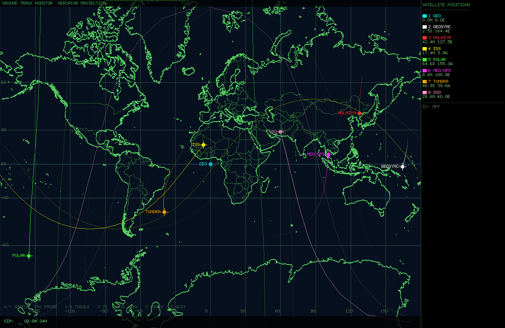

A real-time 3D orbital mechanics simulation written in C with SDL2. Renders a raycast Earth sphere with Lambert shading and a day/night terminator, eight satellites spanning the full range of orbit families, and a Mercator ground track monitor rendered from Natural Earth 1:50m geodata.

Raycast Earth renderer — per-pixel sphere with land/ocean distinction, polar ice caps, lat/lon grid, atmospheric limb glow, and a physically correct day/night terminator (sun fixed at ECI +X).
Mercator ground track monitor (P) —
full-screen mission-control style map built from Natural Earth 1:50m
coastlines and country borders, showing each satellite’s current
sub-satellite point and accumulated ground track history. Pressing
P again returns to the 3D sphere view.
Eight orbit families simultaneously simulated, with realistic orbital elements verified against real-world parameters:
| # | Name | a (km) | e | i | Ω | Notes |
|---|---|---|---|---|---|---|
| 1 | GEO | 42 164 | 0 | 0° | 0° | Geostationary, equatorial |
| 2 | GEOSYNC | 42 164 | 0 | 28° | 45° | Inclined geosynchronous, figure-8 ground track |
| 3 | MOLNIYA | 26 560 | 0.74 | 63.4° | 40° | Apogee over eastern Siberia (~130°E), 12 h period |
| 4 | ISS | 6 778 | 0 | 51.6° | 45° | ~407 km altitude, 92.5 min period |
| 5 | POLAR | 7 000 | 0 | 90° | 90° | True polar LEO, 629 km |
| 6 | MEO/GPS | 26 560 | 0 | 55° | 160° | GPS constellation representative, ~12 h period |
| 7 | TUNDRA | 42 164 | 0.27 | 63.4° | 180° | Sirius-XM style, apogee over North America (~90°W) |
| 8 | SSO | 7 178 | 0 | 98.7° | 130° | Sun-synchronous, 807 km, RAAN precesses with J2 |
Velocity Verlet integrator at 20 s physics timestep with fractional accumulator — speed multiplier is exact regardless of frame rate.
J2 oblateness perturbation (J) —
toggleable zonal harmonic acceleration; makes SSO precess correctly, LEO
nodes regress, and Molniya apogee rotate.
Ground track display (G, 3D mode) —
sub-satellite point projected onto the sphere surface with a nadir line
from satellite to ground.
Ground track history (map mode) — 1 500-point ring buffer per satellite (~41 h of history at default sampling), drawn with age-based alpha fade.
Orbit path overlay — analytically computed Keplerian ellipses drawn separately from the Verlet state; behind-Earth segments dimmed.
Fading trails — 500-point ECI ring buffer per satellite, sampled every 5 physics steps (~100 s sim time).
MP4 video capture (V) — pipes raw
RGB24 frames to ffmpeg; output filename is timestamped.
Works in both 3D and map modes.
Full 3D mouse rotation and zoom covering all orbit sizes (scroll out to see Tundra/GEO simultaneously; scroll in to examine LEO details).
Embedded 5×7 bitmap font — no font library dependency.
| Dependency | Notes |
|---|---|
| GCC ≥ 9 (C17) | or any C17-compliant compiler |
| SDL2 | libsdl2-dev on Debian/Ubuntu |
sdl2-config |
included with libsdl2-dev |
libm |
standard math library |
| Python 3 | for gen_map_data.py (run once at build time) |
ffmpeg |
optional — required only for video capture
(V key) |
make # builds ./earth_orbit (runs gen_map_data.py on first build)
make run # builds and launches
make clean # removes the binary
make distclean # removes binary, map_data.h, and downloaded tarballOn the first build, make runs
gen_map_data.py which downloads the
world-atlas@2.0.2 npm package (~2 MB, cached as
world-atlas-2.0.2.tgz) and generates
map_data.h (~1.8 MB) containing Natural Earth 1:50m
coastline and country border coordinates as flat C arrays. Subsequent
builds skip this step entirely.
Direct compile (requires map_data.h to already
exist):
gcc -O2 -std=c17 -o earth_orbit earth_orbit.c $(sdl2-config --cflags --libs) -lm| Input | Action |
|---|---|
| Left-drag | Rotate view (3D mode) |
| Scroll wheel | Zoom in / out (3D mode) |
+ / = |
Double simulation speed |
- |
Halve simulation speed |
1 – 8 |
Toggle individual satellite on/off |
R |
Reset view to default zoom and angle |
Space |
Pause / resume |
J |
Toggle J2 oblateness perturbation |
G |
Toggle ground track display (3D mode only) |
P |
Toggle Mercator ground track map / 3D sphere view |
V |
Start / stop MP4 video capture |
Q / Esc |
Quit |
Speed range: 1× – 1 000 000×. At the default 800× one GEO orbit takes about 13 s of wall time.
Velocity Verlet at a fixed 20 s timestep. A fractional accumulator converts real elapsed time to physics steps:
sim_acc += time_scale * dt_wall
while sim_acc >= DT: step(); sim_acc -= DTUp to 600 steps are taken per frame to keep up at high speed multipliers.
Two-body point-mass gravity (always active):
a = −(GM / r³) · r⃗With J2 enabled, the zonal harmonic correction is added:
factor = (3/2) · J₂ · GM · Rₑ² / r⁵
aₓ += factor · x · (1 − 5z²/r²)
aᵧ += factor · y · (1 − 5z²/r²)
a_z += factor · z · (3 − 5z²/r²)where J₂ = 1.08263 × 10⁻³, Rₑ = 6 371 000 m, GM = 3.986004418 × 10¹⁴ m³/s².
Satellites are initialised from classical orbital elements via the Keplerian solution: Kepler’s equation solved by Newton’s method (convergence to 10⁻¹³ rad), then transformed to ECI position and velocity through the perifocal frame rotation (Ω, i, ω).
The Molniya and Tundra orbits both use ω = 270° (argument of perigee), which places apogee in the northern hemisphere at latitude ≈ i = 63.4°. The ECI apogee longitude is 90° + Ω. RAAN values were chosen accordingly:
Earth rotation angle advances as θ += Ω_E · dt per
physics step (Ω_E = 7.292115 × 10⁻⁵ rad/s), keeping the ground tracks
and Mercator map in sync with the inertial satellite positions.
Per frame:
1. Clear to black
2. Draw star field (250 points, fixed positions)
3. Lock streaming ARGB8888 texture → raycast Earth sphere
pixel → view-space normal → ECI → Earth-fixed → lat/lon
→ land mask lookup → Lambert shading + ice/grid/limb glow
4. Unlock + RenderCopy texture
5. Draw orbit path ellipses (360 analytical Keplerian points each)
6. [G] Draw ground track dots + nadir lines on sphere surface
7. Draw satellite ECI trails + star-shaped markers
8. Draw HUD (legend, status bar, controls hint)
9. [V] SDL_RenderReadPixels → write RGB24 frame to ffmpeg pipe
10. SDL_RenderPresentStartup (once):
1. Fill MAP_W × WIN_H pixel buffer with navy background + lat/lon grid
2. Draw Natural Earth 1:50m country borders (362 arcs, 1 px, dim green)
3. Draw Natural Earth 1:50m coastlines (1 597 arcs, 2 px, bright green)
— Bresenham lines written directly into the pixel buffer
4. Upload to static SDL_Texture (never redrawn)
Per frame:
1. Blit static map texture (MAP_W = 1000 px wide, panel excluded)
2. Draw ground track history lines with age-based alpha fade
— antimeridian-crossing segments skipped
3. Draw current sub-satellite position markers + crosshairs + labels
4. Draw lat/lon axis tick labels
5. Draw right panel (legend with live lat/lon per satellite)
6. Draw status bar (sim time, speed, pause, REC indicator)The Mercator background is generated at first build from Natural
Earth 1:50m data via the world-atlas@2.0.2 npm package
(public domain / ISC licence). gen_map_data.py decodes the
TopoJSON arc format, splits arcs into coastlines (used by the unified
land object) and internal country borders (used by
countries but not land), and outputs
map_data.h with flat float[N][2] arrays ready
for direct #include.
Press V to start recording. A timestamped
.mp4 file is created in the working directory. Press
V again to stop and finalize. The blinking REC
indicator appears in the bottom-right corner while recording. Works in
both 3D and map modes.
The ffmpeg command used internally:
ffmpeg -y -f rawvideo -pixel_format rgb24 -video_size 1200x780 \
-framerate 60 -i pipe:0 \
-c:v libx264 -preset fast -crf 18 -pix_fmt yuv420p \
earth_orbit_YYYYMMDD_HHMMSS.mp4ffmpeg must be available in $PATH. If it is
not found, a message is printed to stderr and recording does not start.
Play back with ffplay, mpv, or
vlc.
earth_orbit.c — complete simulation (~1 210 lines, single translation unit)
gen_map_data.py — downloads world-atlas tarball, generates map_data.h
Makefile — build rules, map_data.h dependency
README.md — this file
Generated at build time (not committed):
map_data.h — Natural Earth 1:50m C arrays (~1.8 MB, ~20 000 lines)
world-atlas-2.0.2.tgz — cached npm tarball (~2 MB)| Symbol | Value | Description |
|---|---|---|
RE |
6 371 000 m | Earth mean radius |
GM |
3.986004418 × 10¹⁴ m³/s² | Gravitational parameter |
Ω_E |
7.2921150 × 10⁻⁵ rad/s | Earth rotation rate |
J₂ |
1.08263 × 10⁻³ | Second zonal harmonic |
DT_PHYS |
20 s | Verlet timestep |
GT_LEN |
1 500 points | Ground track history per satellite |
TRAIL_LEN |
500 points | 3D ECI trail per satellite |
MAP_LAT_CLIP |
±82° | Mercator latitude cutoff |
Released into the public domain. Do whatever you like with it. The
Natural Earth geodata embedded in map_data.h is public
domain. The world-atlas npm package is ISC licensed.